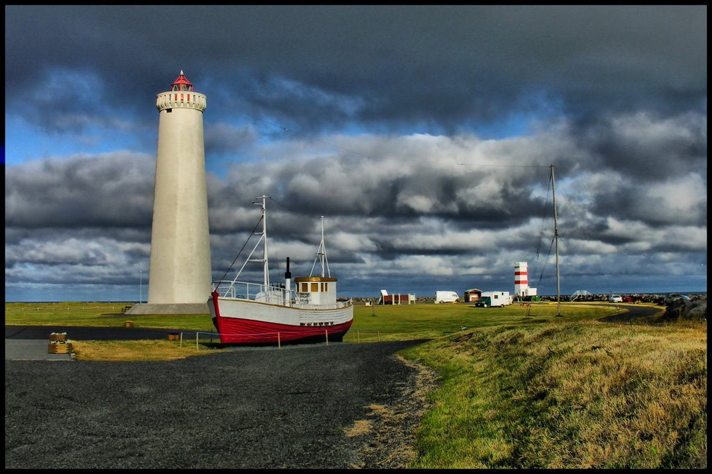
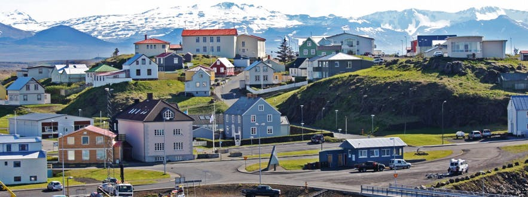
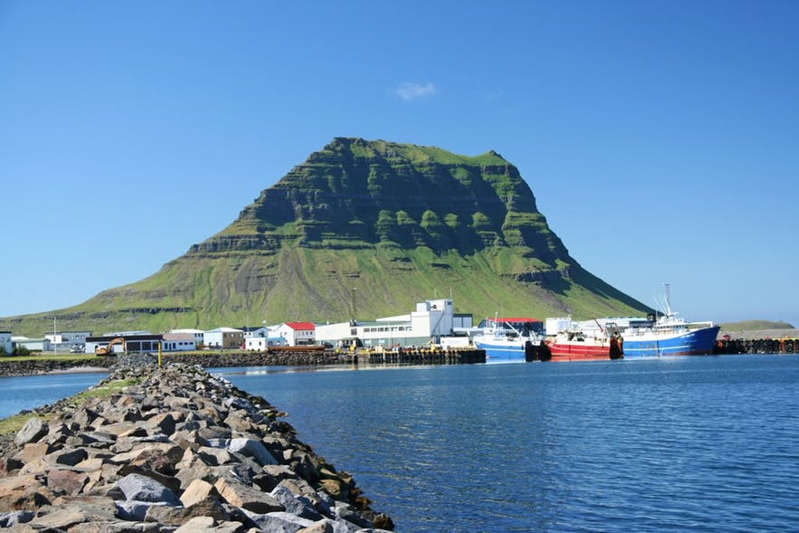
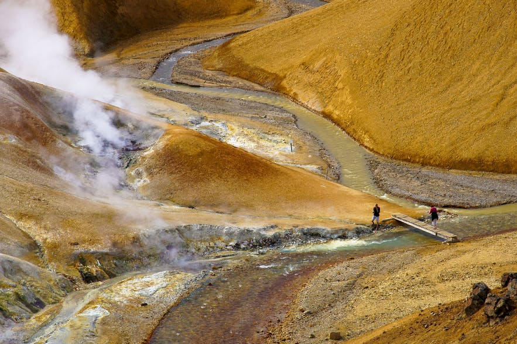
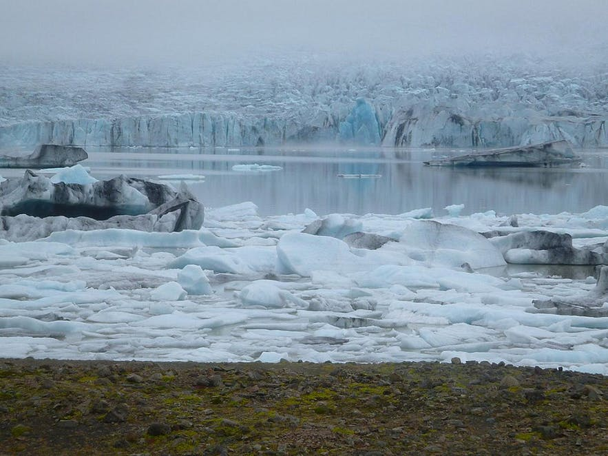
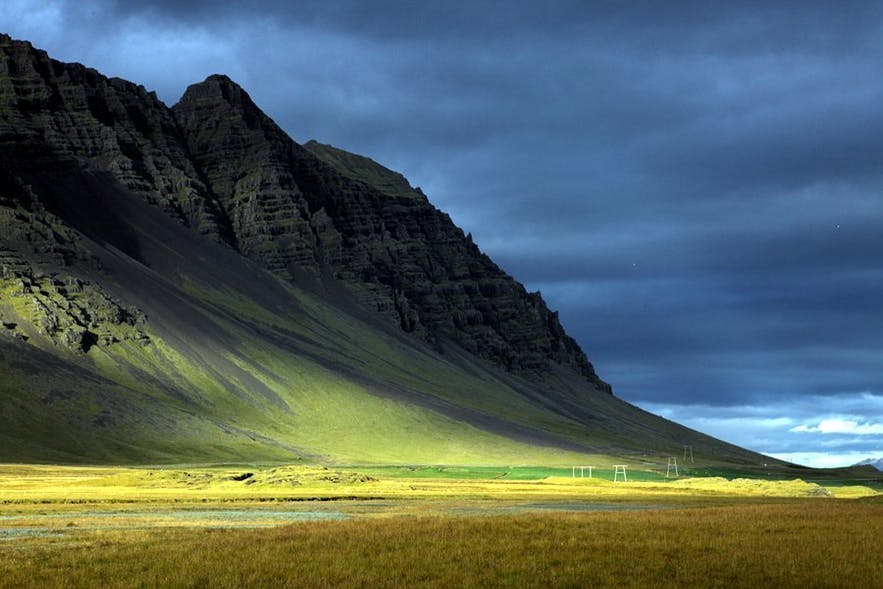
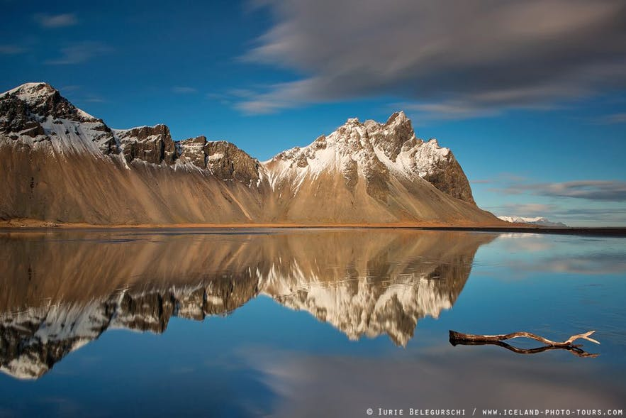
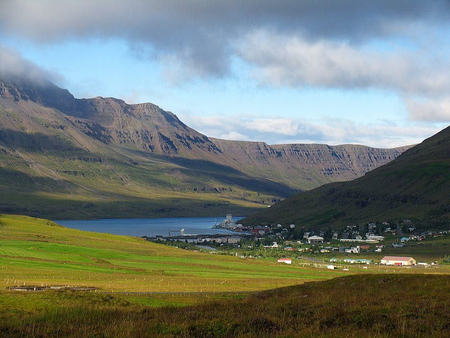

På denne hjemmeside kan du opleve udvalgte lokationer fra filmen "The Secret Life Of Walter Mitty" på Island. Hertil vil der være små facts omkring hver lokation.
Garður er en fiskerby nær Keflaviks internationale lufthavn. Er er der mulighed for at se Islands ældste fyrtårn – Garðaskagi og tusindvis af havfugle fra Grønland og nord Amerika.
Stykkishólmur er hovedstaden af kendte Snæfellsnes Peninsula. Stykkishólmur er en lille smuk fiskerby hvor man kan se en masse ældre bygninger.
Grundarfjörður er en fikserby tæt på det meget populære bjerg Kirkjufell. Denne lokation er specielt populær for fotografer, da dette område er ekstraordinært smukt. Grundarfjörður er lokaliseret 40 km. fra Stykkishólmur.
Hveradalir er et Geotermisk område nær kendte Hveravellir og bjerget Kerlingafjöll.
Fjallsárlón er et Gletsjer område i syd Island. Området er ikke særlig stort, men meget smukt.
Kalfafellsdalur er en dal mellem Jökulsárlón og byen Höfn.
Höfn er en fiskerby i smukke Hornafjörður havn, hvor du kan se en naturskøn udsigt udover Vatnajökull gletsjer.
Seyðisfjörður er en lille by lokaliseret i en smuk fjord med samme navn som Seyðisfjörður. Hver uge sejler der en færge fra Danmark og her til.
